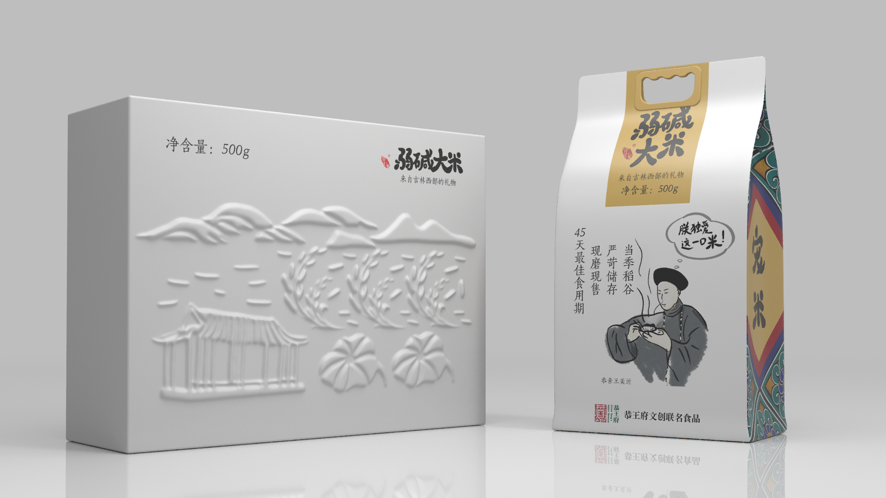

宠米杂粮礼品盒+真空袋设计
此项目为恭王府文创设计参赛作品。通过挖掘恭王府饮食文化，与宠米结合进行ip、平面及包装设计。
↓
项目信息
- 时间 2021/12-2021/1
- 角色 Design Lead
- 团队组成 三维包装设计*1，ip设计*1，
平面及创意设计*1
- 设计创意提出、前期调研参与
- 视觉风格制定
- 排版设计
设计思路
- 在陈光老师的《清末王府宴客、饮食研究》里提到，䜣恭王府的朗润园山水宜人，景色幽丽。园中植物远近闻名，如藤萝、海棠、莲花、翠竹等。恭亲王奕䜣为道光皇帝的第六子，诗画皆优，才华超人，恭王府的饮食多清淡、别致，应与奕䜣个人的喜好相关。其中他最爱的王府盛夏名点之一“莲香什锦饭”清淡浓郁，色泽艳丽。
- 我将他对这款名点的喜爱与弱碱大米的优良品质结合进行后期ip设计、平面排版设计、字体设计，并在背后信息表增加“莲香什锦饭食谱”，增加趣味性。字体部分采用具有亲和力的书法字体，侧面的恭王府花纹与“宠米宠你”增加品牌辨识度。礼品盒绘制了山水、稻米、恭王府花园和莲叶，与“莲香什锦饭”相呼应。